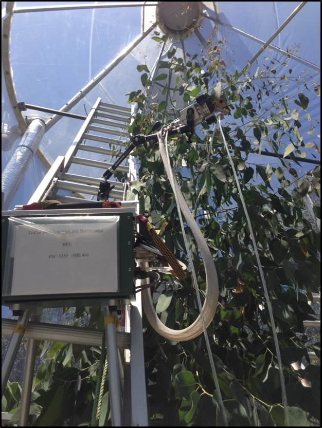

- www.courtneycampany.com
- twitter @court_campany
Ecophysiology of Eucalyputus, across multiple scales, using Whole Tree Chambers
Court Campany
Research Fellow, Hawkesbury Institute for the Environment
About me
insert leaflet
Reproducibility
- Im a strong advocate of reproducibility in science, so....
- All code for this talk can be found @ https://github.com/CourtneyCampany/
- data & analysis for WTC1: github.com/CourtneyCampany/WTC1
- data & analysis for WTC3: github.com/CourtneyCampany/WTC_tree
- code for this talk: github.com/CourtneyCampany/WTC_talk
Whole Tree Chambers, Hawkesbury Forest Experiment
climate change manipulations
what they are:
what they are not:
My interests revolve around understanding plant C gain and allocation
Necessary to investigate leaf and whole plant scales
Today Ill show data from two experiments (WTCI and WTCIII)
Attempt to address some knowledge gaps in canopy C gain and tree C allocation
These experiments are conducted with Eucalpytus species
Why are eucalpyts important?
Why do they make really nice model trees in investigate physiology
So today we will start small and work are way up...
#Coupled response of stomatal and mesophyll conductance to light enhances photosynthesis of shade leaves under sunflecks
###Courtney E. Campany1, Mark G. Tjoelker1, Susanne von Caemmerer2, Remko A. Duursma1.
1^ Hawkesbury Institute for the Environment, Western Sydney University, Locked Bag 1797, Penrith 2751 NSW, Australia
2^ ARC Centre of Excellence for Translational Photosynthesis, Plant Science Division, Research School of Biology, The Australian National University, Canberra 2601 ACT, Australia
Leaves are reported to have an optimized behavior
They should act to maximize carbon gain while minimizing costs


http://cc61877.github.io/wtc3_talk/index.html#1
However...

For the canopy...Don't LEAF things to chance

Trees can't put all leaves in the sun
- Drives changes in anatomy, morphology and physiology
- Affects canopy resource distribution
Photosynthetic capacity ↓ in shade leaves
Photosynthesis is a diffusion process
- Driven by resistances to CO2 into leaves and then to the site of carboxylation
- Stomatal (gs) and mesophyll (gm) conductance both limit photosynthesis
- Limitations result from costs and tradeoffs
- We know little about these relationships within canopies

Leaves experience light fluctuations daily

Are shade leaves optimized for low light or to respond to occasional high light
Beyond just photosynthetic capacity
gs responds slowly
gm anatomicaly constrained
Unfortunately, not enough empirical data available
Sun and shade leaf physiology with the WTC3

12 whole tree chambers
- +3°C ET treatments
- Minimal treatment effects found
Imposed drought in final months
- Focus on well watered trees
Heaps of gas exchange over 6 months
- Sun and shade leaves
- Leaf temperature = air temperature
- Tunable diode laser for gm
What's in a name? That which we call a Rose Leaf

Measuring two canopy extremes
- Sun: top of canopy in full light
- Shade: bottom and middle canopy in full shade
- Verified with quantum sensor and ceptometer
Leaves measured at current light environment
- Paired WTC compairsons
'Lights On' for shade leaves
- Max sunfleck response